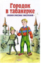

Одна из самых популярных российских книжных серий для детей и подростков. Белый фон, красные буквы, яркая иллюстрация как магнитом притягивает "мальчишек и девчонок, а также их родителей" - и не случайно. В серии собраны лучшие произведения отечественных и зарубежных авторов, когда-либо писавших для 6-13-летних граждан. Наряду с известными произведениями, давно ставшими классикой, в серии представлены новинки детской зарубежной литературы. Покупатели доверяют выбору наших редакторов - едва появившись на прилавке, эти книги становятся бестселлерами. В книгу вошли сказки писателей С.Аксакова, М.Лермонтова, В.Одоевского, А.Погорельского, В.Даля, К.Ушинского, М.Михайлова, В.Гаршина, Л.Толстого, Д.Мамина-Сибиряка, Н.Гарина-Михайловского, А.Горького, Н.Телешова, А.Толстого, Л.Пантелеева.